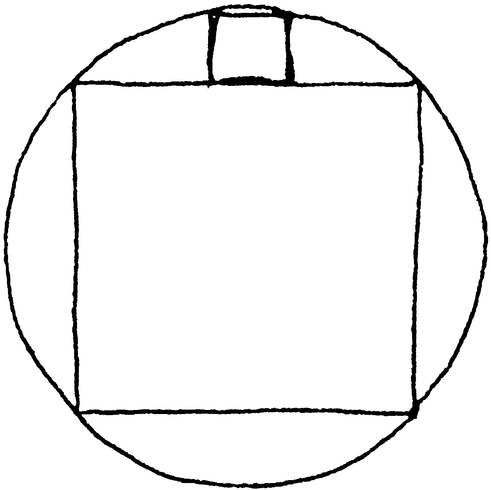
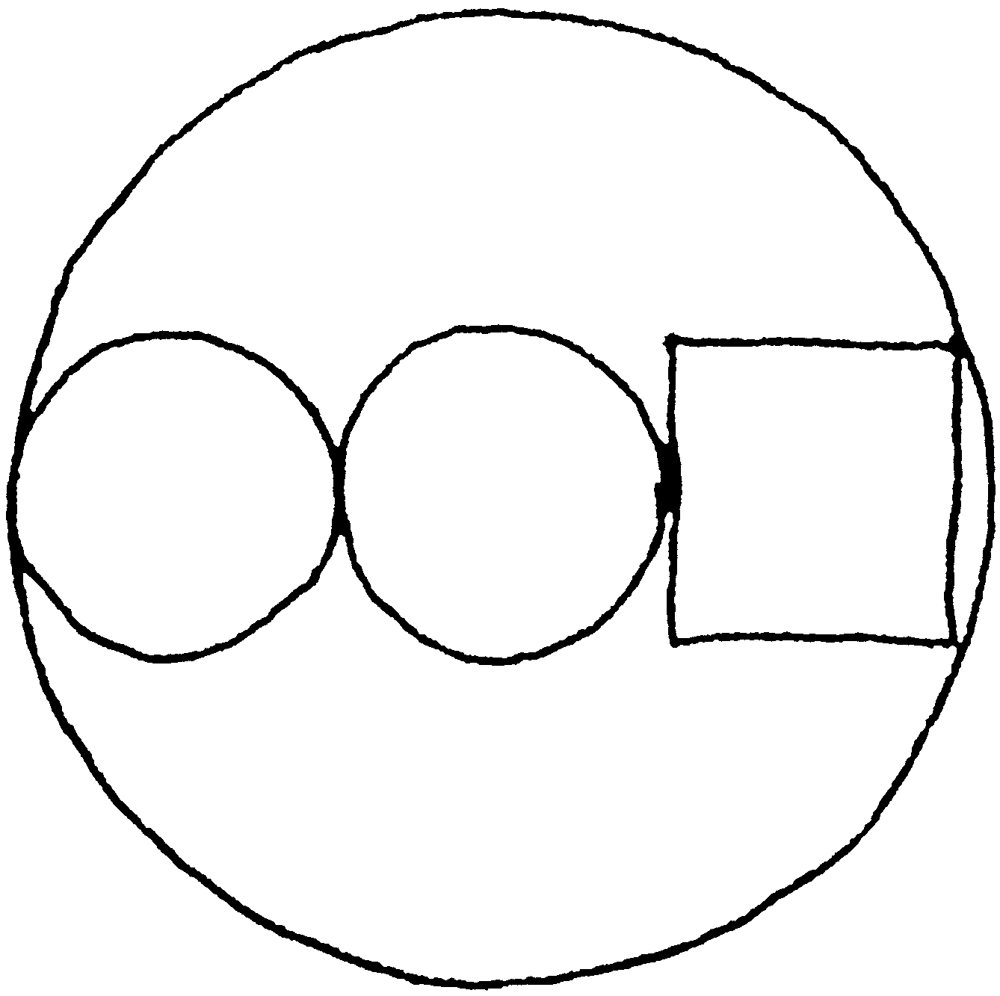
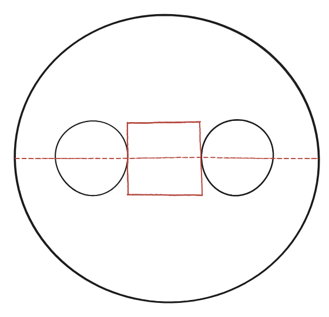
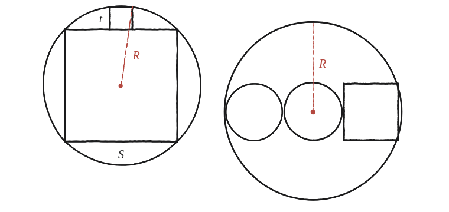

Dues de les meves preferides.


Què demanen aquests dos dibuixos
Cap dels dos panells porta enunciat escrit: cal llegir la pregunta directament del dibuix. Totes dues figures amaguen la mateixa mena de pregunta de fons que q27: mesurar la peça petita en funció de la gran. El primer panell mostra un quadrat inscrit en una circumferència i, recolzat sobre el seu costat de dalt, un quadrat petit amb les dues cantonades de dalt sobre l'arc; el segon, un quadrat i dos cercles petits en fila, tots tres dins d'una circumferència gran que els engloba.
Panell 1 — el quadrat petit damunt del quadrat inscrit
Primer, el quadrat gran. Els seus quatre vèrtexs toquen la circumferència, o sigui que la seva diagonal és el diàmetre. Si el costat és S, la diagonal fa S√2 (Pitàgores sobre mig quadrat) i alhora val 2R: R² = S²/2.
Ara el petit, de costat t. Amb el centre de la circumferència a l'origen, el costat de dalt del quadrat gran és a y = S/2, i el quadrat petit hi seu a sobre, centrat. Les seves cantonades de dalt són, doncs, (±t/2, S/2 + t), i el dibuix diu que són sobre la circumferència:
(t/2)² + (S/2 + t)² = R² = S²/2 → t²/4 + S²/4 + St + t² = S²/2 → 5t² + 4St − S² = 0.
L'equació es factoritza: (5t − S)(t + S) = 0. L'arrel t = −S no té sentit per a una longitud, i queda t = S/5: el quadrat petit té exactament un cinquè del costat del gran, i per tant 1/25 de la seva àrea.
Panell 2 — quadrat i dos cercles en fila
Aquí les incògnites són R (el radi del cercle gran) i r (el radi comú dels dos cercles petits), i cal una equació que les lligui. El quadrat té costat 2r, igual que el diàmetre comú dels dos cercles petits.
Abans de comptar res, convé mirar bé com toca cada peça el cercle gran, perquè és d'aquí que sortirà l'equació: el cercle de l'esquerra hi és tangent per l'extrem esquerre, i el quadrat hi arriba per les dues cantonades de la dreta, no pel mig del seu costat. Val la pena veure per què no pot ser d'una altra manera. Si la fila sencera travessés el diàmetre de banda a banda, faria 2r+2r+2r = 6r = 2R, és a dir R = 3r; però aleshores les cantonades del quadrat quedarien a distància √((3r)²+r²) = r√10 ≈ 3,16r del centre, més que els 3r del radi: sortirien fora del cercle. La figura seria impossible.
Amb el centre del cercle gran a l'origen, doncs: el cercle esquerre és tangent per dins a (−R, 0), de manera que el seu centre és a x = −R+r; el segon centre, a x = −R+3r; i el quadrat va de x = −R+4r a x = −R+6r, amb els costats de dalt i de baix a y = ±r. Imposant que la cantonada (−R+6r, r) sigui sobre la circumferència:
(6r−R)² + r² = R² → 36r² − 12rR + R² + r² = R² → 37r² = 12rR, i com que r≠0, 37r = 12R: el radi gran és 37/12 ≈ 3,083 vegades el petit.
La figura tanca amb números exactes per un motiu que val la pena veure: amb R=37 i r=12, el quadrat arriba fins a x = 6(12)−37 = 35, i 12² + 35² = 144 + 1225 = 1369 = 37². És el triple pitagòric (12, 35, 37) el que fa que la cantonada caigui exactament sobre la circumferència.

El mateix moviment en totes dues
Els dos panells —i tota aquesta família de puzles de cercles tangents que inclou també q22 i q27— es resolen sempre amb el mateix moviment: connectar centres, trobar-hi un triangle rectangle amagat (al panell 1, el que formen el centre, una cantonada de dalt del quadrat petit i el seu peu sobre l'eix vertical) i aplicar el teorema de Pitàgores o una simple suma de longituds sobre una línia recta.

Panell 1: t = S/5 —el quadrat petit té un cinquè del costat del gran i 1/25 de la seva àrea—, de la condició que les seves cantonades de dalt caiguin sobre la circumferència i de R² = S²/2 per al quadrat inscrit. Panell 2: 37r = 12R, és a dir R ≈ 3,083·r —de la condició que les cantonades de la dreta del quadrat caiguin sobre la circumferència gran, cosa que amaga el triple pitagòric (12, 35, 37). Totes dues surten de mirar amb cura on toca cada peça i escriure-ho, el mateix moviment que a q22 i q27.
Comprovació
Al primer panell, amb S=5 surt t=1: R² = 25/2 = 12,5, i la cantonada de dalt del quadrat petit, (0,5; 3,5), és a distància² 0,25 + 12,25 = 12,5 = R² del centre ✓. Al segon panell, amb r=12 surt R=37: el quadrat va de x=11 a x=35 (prenent el centre a l'origen), i la seva cantonada (35, 12) és a distància √(1225+144)=√1369=37 del centre ✓, exactament el radi.